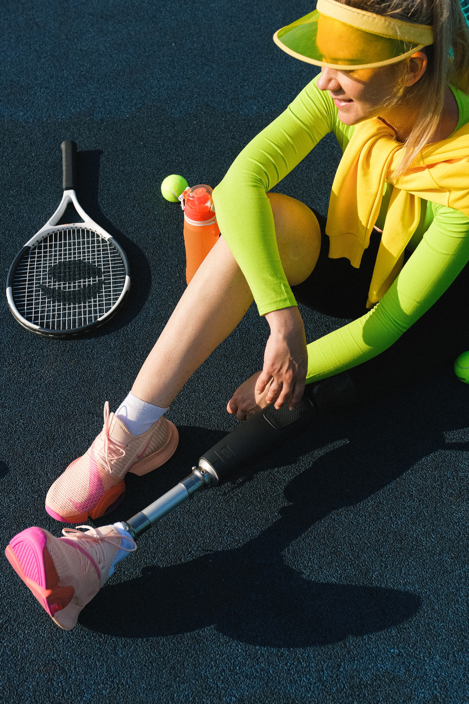

Unser Team
Lucas
Lucas ist in der Großstadt mit vielen Geschwistern auf kleinem Raum aufgewachsen. Er hat ein unglaubliches Talent entwickelt auf kleinstem Raum alles zu nutzen und unterzubringen. Er liebt es, um die Welt zu reisen und neue Orte zu entdecken. Im familieneigenen Betrieb konnte er das Handwerk des Tischlers und Dachdeckers erlernen.Marina
Marina teilte sich mit ihrer kleinen Schwester, Eltern und Großeltern einen sehr großen Hof am Land. Ihre Leidenschaft ist die Arbeit mit Holz und dabei liebt sie sowohl die Arbeit mit großen Baumstämmen als auch das Schnitzen feiner Gravuren. Sie ist sehr gesellig und mag es gar nicht allein zu sein.

Lisa
Lisa wuchs mit ihren beiden Brüdern zunächst in einem großen Haus am Stadtrand einer Metropole fernab auf und zog anschließend mit ihrer Familie zurück nach Österreich in eine kleine Stadtwohnung. Sie ist ein richtiges Planungsgenie und hat stets einen guten Blick auf die Gesamtkosten. Als Ausgleich ist sie sportlich sehr engagiert und hat auch so manchen Wettbewerb schon gewonnen. Mit ihrem Betriebswirtschaftsstudium bringt sie das nötige wirtschaftliche Fachwissen mit in den Betrieb